第9章 重要的反转形态：续
9.1 箱体、双顶、三顶形态
第8章学习的三角形价格形态既可能是反转形态，也可能是整固形态。对于直角三角形，一旦它们成形，我们便会知道其后续的走势。对于对称三角形，虽然股价很有可能在突破后维持之前的走势，而非逆转，但在其最终突破前，我们并不能预测其后续走势。从很多方面来看，我们接着要讲的箱体形态与对称三角形相似。实际上，我们将要详细讨论两者的很多共同点（参见图9-1～图9-18）。
箱体形态由交易区间内一系列的价格波动组成，这些波动的高点和低点都分别由一条水平线来界定。翻看一下本章中的图表，就可以理解此形态得名的由来。在少数情况下，箱体形态的上界线和下界线保持水平，但轻微向下或向上倾斜；还有些箱体形态的界线接近水平，但趋于相交。这些形态既可被视为箱体，也可被视为对称三角形。不论是属哪种，其预测结果都一样。
回顾一下头肩形态、复杂头肩形态和圆形形态，就会发现，如果忽略成交量，那么这些形态都可以归类为箱体。实际上，要区分箱体形态和这些形态并不难，因为形成箱体的市场环境和交易活动类型明显有别于其他形态。
根据其特点，我们称对称三角形为“存疑形态”，而称箱体为“冲突形态”。当然，任何一种紧凑的价格形态都反映供需之间的冲突。比如说头肩顶形态就展示了“强大的”卖盘和“弱小的”买盘之间的冲突，且在冲突结束之前就胜负已定。箱体则反映了实力相当的两股力量之间的较量——卖家想以特定价格出手，而买家想以更低的价格入手，两者不断拉锯，直到最后，甚至是突然，其中一股力量耗尽（或是投降），另外一股力量胜出。在界线被有效突破之前，无人能预测输赢。
我们讲箱体交易区间是由两股力量交锋形成的。但要注意，这里并不是说这两股力量在“操纵”股价。一只信托基金或家族基金或散户大户可能愿意在箱体的最高价（阻力位）卖出股票，但无意误导市场。同时，另外的机构投资者或内幕交易者则希望在箱体的最低价（支撑位）购入该股。箱体形态刚形成时的力量交锋大抵如此，但如果最高价和最低价之间的价差足够大（如股价的8%～10%），就可能迅速引来短线客跟风。比如说，一个持有美国钢铁公司股票的财团希望以76美元的价格出手，而另一财团决定以69美元重仓该股。那么，该股股价会在两者之间震荡一段时间。注意到这个情况的短线客则会在69美元买入、在76美元卖出（或者在76美元卖空、69美元回补）。尽管这种跟风操作涉及的股数不多，对最终股价走势的影响有限，但往往会凸显或延长箱体形态。实际上，如果进退得当，这种箱体内的交易可以非常赚钱。
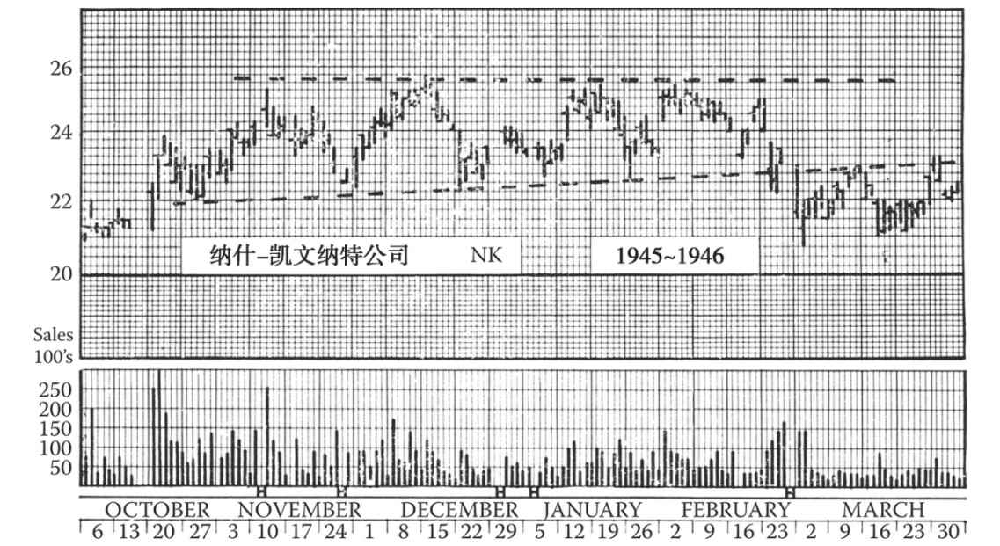
图9-1 纳什-凯文纳特公司走出了一个为期4个月的出货箱体形态，其下界线轻微上扬，该股随后于1946年见顶。该箱体持续时间长，形态较松散，成交量并不十分明显地萎缩，但总的来说，从1945年10月中到次年2月中的成交量总体在下降
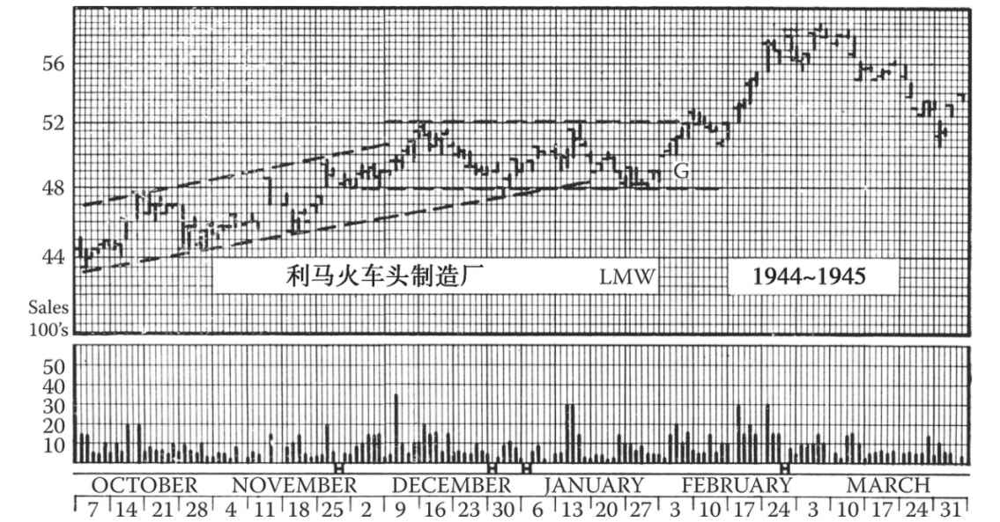
图9-2 现在，上升趋势中的整固箱体形态不如20世纪二三十年代常见。此图中的缺口（G）是箱体形态中最后一个缺口。第12章将详细介绍缺口的内容。当一个缺口后面紧跟着技术形态的突破（如图所示），那么这个缺口很少会快速回补
9.2 财团操纵股价
在美国证券交易委员会（SEC）禁止财团操纵股价之前，单个财团常常通过一系列有组织的活动让股价走出箱体形态。此类财团可能事先掌握了某公司的利好消息，重仓该公司的股票，目的就是炒高股价，待消息公开后获利了结。为了构建理想的横盘走势，他们首先会震仓，刺激其他交易者和不明就里的投资者抛盘。一开始他们可能会突然卖空几百股，耗尽买盘，并引起股价下跌。然后，当股价降至预定的建仓价时，他们开始买入。他们会巧妙地分散买盘，避免引起他人注意。由于买盘总量巨大，股价迟早会开始反弹，此时他们会散播一些谣言，比如某个内部人士在抛盘，或者某个并购计划被取消，或者公司取消分红。如果有必要，他们甚至会高调地卖出一些刚买入的股票来配合这些谣言。这个过程可能反复上演，直至他们获得了足够的筹码，或卖盘已经枯竭。在20世纪20年代，图表分析师往往能及时看穿这种把戏；当然在股价向上突破箱体形态后，财团的操纵行为就更易识别了。
但现在，监管方已明令禁止此类操作，“洗盘”行为广受谴责。美国证券交易委员会严密监控每笔交易，一旦发现可疑消息或活动就迅速展开调查，这有效遏制了股价操纵行为。因此与20世纪20年代相比，50年代更少出现箱体形态（第1版编者按：但进入21世纪后，箱体并不少见）。
通过对比箱体和与之最接近的对称三角形，我们可以快速清晰地整理出箱体形态的如下特点。
·成交量： 与三角形的成交量走势相同，呈现逐渐萎缩的特点。除非是短时间受到消息面的影响，否则任何有悖于此规律的成交量变化都很可疑。
·突破： 与三角形的突破要求相同。请回顾三角形突破时的成交量、有效突破的涨跌幅要求等。
·假突破： 箱体形态出现假突破的概率远低于对称三角形。形态清晰的箱体几乎和头肩形一样可靠，尽管效力不及后者。
·不成熟的突破： 和三角形相比，箱体出现不成熟突破的概率略大。
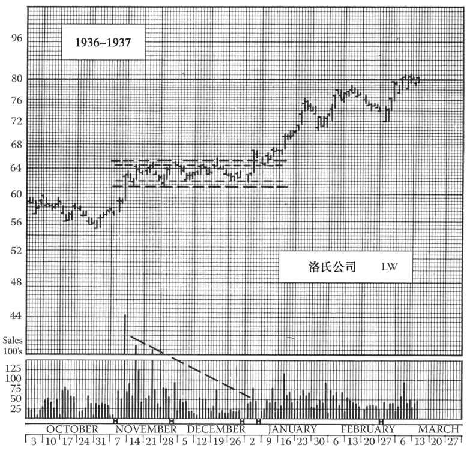
图9-3 洛氏公司在1932～1937年的牛市末尾走出了一个完美的整固箱体形态。内幕人士在64～65美元大举出货，另一些投资者在62美元吸筹。股价于1937年8月涨至87美元。请注意股价于1月突破箱体后的回踩
（注：假突破和不成熟突破 往往难以辨别。假突破或不成熟突破发生后，股价都会回到箱体内，股价真正突破后的走势与假突破方向相反，与不成熟突破方向一致。）
图9-4 这张图中，低价股飞马石油公司走出了一个箱体形态，股价在一个狭窄的区间内波动，1945年12月到达18美元，然后跌回到15¼美元，接着在1946年年中反弹。8月末股价沿着一条中期趋势线向下突破（见第14章），4天后脱离了箱体。该形态与早前的顶部一起预示着该股将进一步下跌。另请见图9-5的解释
·反抽 ： 箱体与对称三角形相比，股价突破形态后回归的概率更大。股价突破箱体后3天到3周内回归的概率约为40%。
·方向性趋势： 箱体成为整固形态的概率大于成为反转形态的概率，前者和后者的比例与对称三角形大致相同 [1] 。作为反转形态的箱体更多见于长线或中线底部，而非顶部。长线底部常出现又长又窄、交投清淡的箱体，它们有时发展成平底碟形或第7章所述的休眠形态。
·测算公式： 对于箱体，我们有一个按其震荡区间测算最小涨跌目标的可靠公式。股价突破后，其最小涨跌幅应等于箱体上界线与下界线之间的距离，当然可能更大。一般说来，又短又宽、接近正方形、交投活跃的箱体预示着更大的涨跌幅；而股价突破又长又窄的箱体后，往往会在最小涨跌位停留或回调，然后继续上攻或下行。
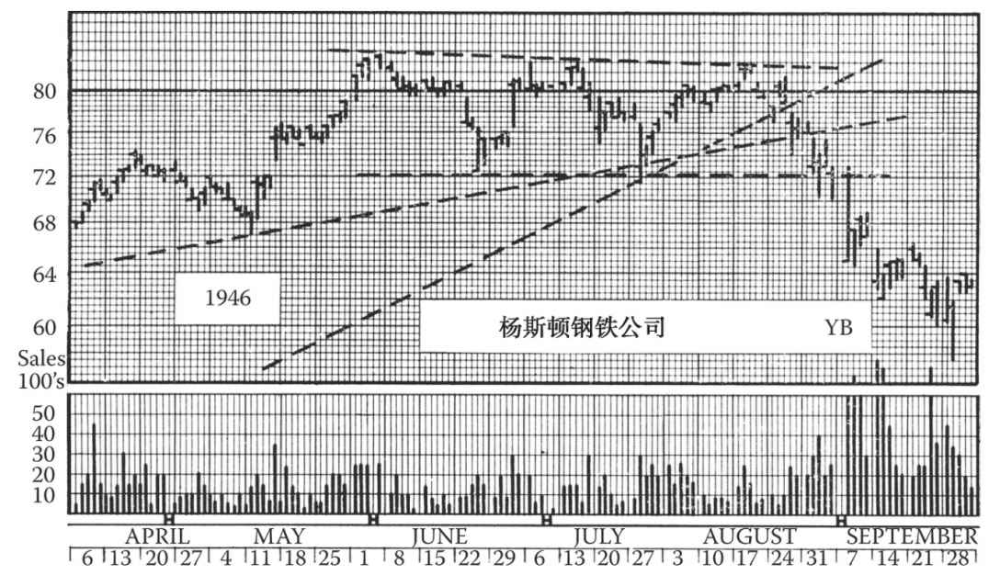
图9-5 这张图展示了又一个长而松散、预示着长线反转的箱体，有点像图9-1中的形态。杨斯顿钢铁公司股票在1946年8月有效跌破了中期及长期上升趋势线（后文会讨论），紧接着突破了箱体形态。在图8-21中我们说过，可通过比较个股与道琼斯平均指数的走势，发现长线趋势调头向下的预警信号。这张图给了我们另一个启示：在道琼斯平均指数已长线见顶后，钢铁及石油业的绩优股（见图9-4的飞马石油公司）往往比较坚挺，或出现强劲的中线修复行情。金融业内人士有时会谈及“在钢铁股走强的掩护下出货”
9.3 箱体与横盘的关系
你肯定觉得，箱体形态很像道氏理论中的横盘。显然，两者具有类似的成因和预测效力。但是，真正的箱体具有鲜明的上界线（阻力位）和下界线（支撑位），唯一区别在于个股的成交水平。道琼斯平均指数的横盘走势没有严格定义，只要若干短线高点接连出现在一条水平线上，若干短线低点接连出现在另一条水平线上，就算横盘走势。当某一平均指数横盘时，看看其成分股的走势图，就会发现有些在涨，有些在跌，还有一些在构筑三角形、箱体等形态；平均指数的横盘形态是所有成分股走势的总和。
有些主动交易者会在某一平均指数到达某一点位时买卖股票，而不看个股走势。投资顾问有时建议客户“在道琼斯工业平均指数到达某点位时清仓”。但实际上人们很少严格遵循此类建议进行操作，故其效果并不明显。（第10版编者按：现在有了指数化的交易所交易基金，情况已经不同。）
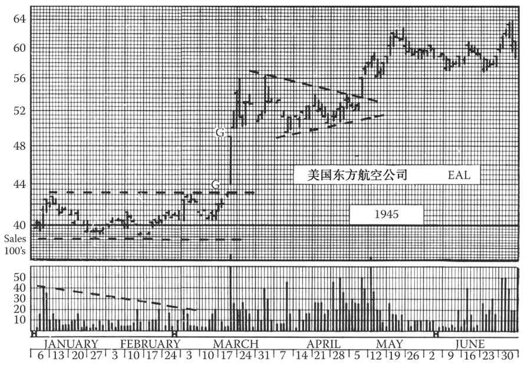
图9-6 美国东方航空公司股票在1945年年初走出了一个箱体形态，它实际上是两年整固形态的最后阶段，股价随后延续升势；在这轮长线行情中，该股自1942年的17美元涨到了1945年12月的125美元以上。图中的两个G点表示缺口（见第12章），第1个是突破缺口，第2个是测量缺口，预示着股价的上涨目标可能是55美元。股价到达该目标位后，走出了对称三角形整固形态。在接下来的两年里，两个缺口都未得到回补
9.4 从直角三角形演变而来的箱体
前一章我们提到，一种部分“失败”的直角三角形形态可被重新归类为箱体。现在我们来详细讨论这种图形，值得注意的是，这种图形还是更可能朝最初的直角三角形预示的方向突破。但是，这个推断并不代表这种图形不会演变成箱体，并朝相反的方向突破。
9.5 双顶、双底、三顶、三底
对于金融圈的一些老手来说，我们把双顶称为反转形态系列中的小形态，实属不敬。对于那些对技术分析一知半解却常把各种技术术语挂在嘴边的交易者来说，“双顶”确实是一个高频词。真正的双顶或双底极其罕见，更不用谈三顶或三底了。而且除非股价出现明显的突破，否则此类形态不可能在刚出现时就被识别出来。
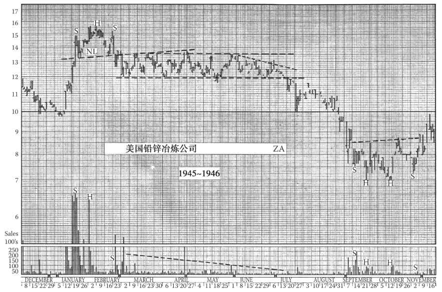
图9-7 美国铅锌冶炼公司从1946年2月向下突破了头肩形态后，走出一个非常完美的长箱体走势。7月15日，股价突破箱体向下，然后于17～18日反抽，为投资者提供了一个绝佳的卖空机会。同年9～11月，该股走出一个复合头肩底形态，此后股价反弹至11美元，但于1947年年初再次回落至6美元
但先让我们回到正题，定义一下双顶和三顶。双顶出现的条件是：股价先涨至某一水平，通常在整个上涨过程和高位时都伴随着高成交量，然后开始回落，成交量萎缩，之后再次上扬，到达几乎相同的高位，此时成交量略有扩大，但小于第一波涨势的水平，最后再次下跌，形成长线或中线跌势。双底出现的条件和双顶刚好相反，而三顶或三底则是顶部（或底部）出现了三次。
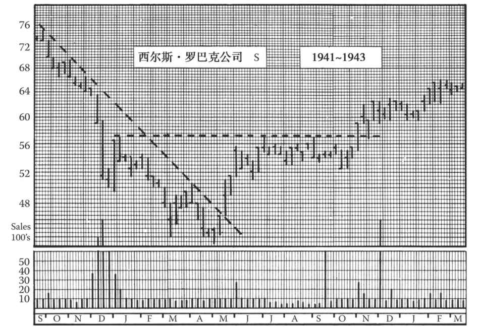
图9-8 这是西尔斯·罗巴克公司在1942年熊市底部时的一幅周线图。该股在这段时间内走出了一个大而不对等的双头肩形态，其右肩由一个整固箱体（6～11月）构成
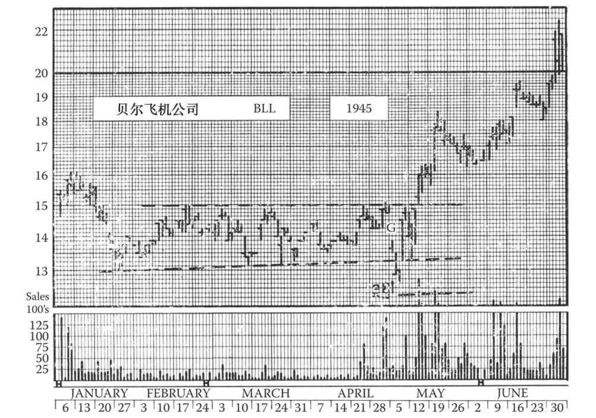
图9-9 贝尔飞机公司股价于1945年1月上攻至16美元，随后跌至13美元，此后形成了一个为期15周的箱体形态。请注意4月30日的向下缺口（G）是由当天除息1美元造成的，根据规则，箱体下界线相应下移，并未被突破
如果你翻阅过几百张月线图，那么肯定会发现两三个长线双顶，还可能找到一两个双底。你会发现两个牛市顶部可能相隔数年，但高度几乎一致。此类现象往往时过境迁之后才凸显出来，令业余投资者大惊小怪。但这些投资者却不会意识到，当时可能还有1000只其他股票也在酝酿双顶，但最后失败了，有些股票甚至已回到第一个顶部的高度，但随后股价继续走高，并没有形成双顶。
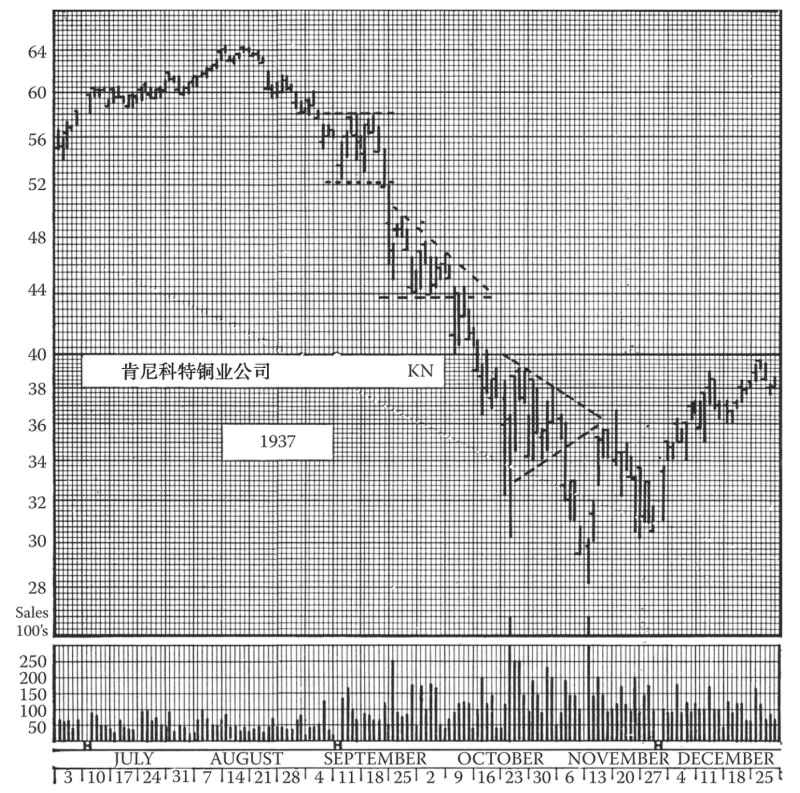
图9-10 肯尼科特铜业公司股价于1937年骤跌，9月走出一个振幅非常大且持续时间短的箱体形态，随后又走出一个下降三角形和一个对称三角形整固形态
那么，对于交易者或投资者来说，双顶有实用价值吗？当然有，但在回答这个问题前，我们先来看一看什么不算双顶。请回顾一下我们之前学习的上升三角形和箱体，在它们成形初期，第1步就是构建两个高度相同的顶部，两个顶部之间有一个谷底，且第2个顶部的成交量小于第1个顶部，随后往往还会形成第3个顶部，最终股价突破形态，持续上扬。因此，我们必须有一个规则或标准，用于区分双顶反转形态和双顶整固形态。
9.6 差异化特点
对于市值不同、习性各异的股票来说，没有什么绝对的规则能够描述双顶的特点，但当我们对比不同的形态后，就可以发现该形态的一个显著特点：如果两个顶部高度相同，但间隔时间较短，当中只有一波短线调整，那么这个双顶就更可能是整固形态的一部分；相反，如果第一个顶部出现之后，股价明显下跌，持续低迷，出现长时间的圆底形态，且当股价回升至第一个高点时交投清淡，我们就至少可以怀疑这是双顶反转形态。
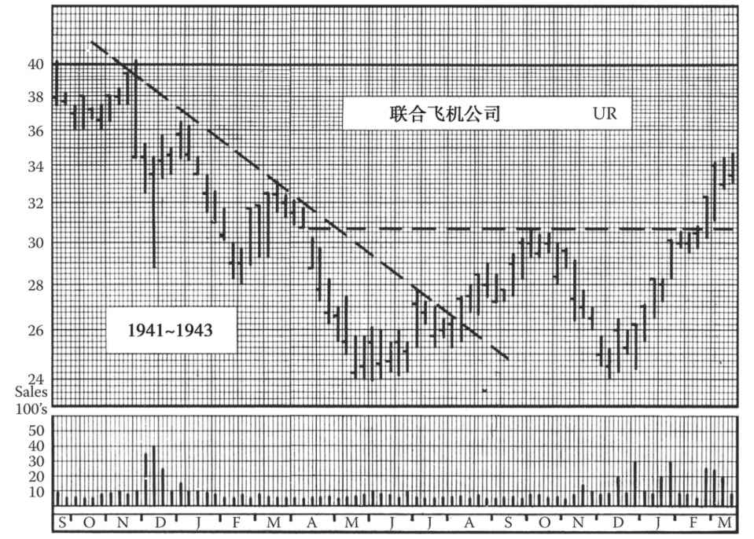
图9-11 直到1943年2月向上突破31美元时，联合飞机公司股票1942年的走势才能算作一个完整的双底形态
那么，股价跌幅要多大，两个顶部的时间间隔要多久，才能算是双顶呢？很遗憾，这个问题并没有简单、绝对的答案。但我们仍可以估算。如果两个顶部相隔1个月以上，那么就不太可能是整固或箱体形态的一部分。此外，如果在两个顶部之间的那波回调中，股价自峰值下跌了20%，那么这就更有可能是一个双顶反转形态。但是，这两条标准也并不绝对。有时，双顶的两个顶部仅仅相隔两三周；有时，谷底离顶部只有15%的跌幅。但在大多数真正的双顶形态中，两个顶部会相隔两三个月或更久。总的来说，间隔时间比股价跌幅更重要。两个顶部相隔越久，就越不需要股价跌那么多来印证趋势反转。
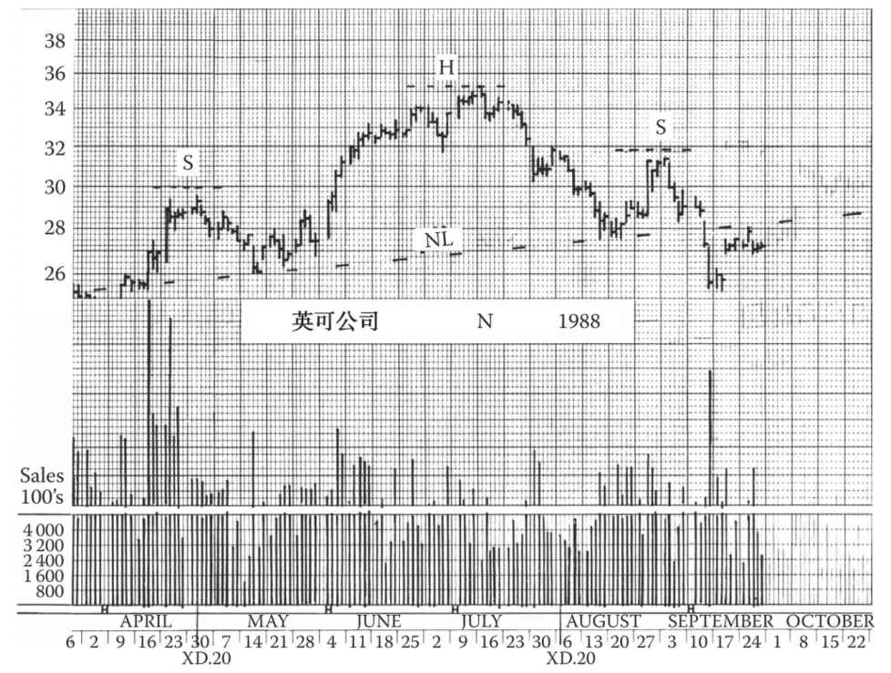
图9-12 英可公司迅速走出了1987年里根时期的崩盘，并在年底就几乎回到当年的高位，此高位于1988年4月被突破，之后的一波强劲行情持续推高公司股价，但8月出现回调，9月反弹无力，形成了一个大头肩顶。9月初股价跌破颈线，确认趋势反转。随后股价出现了一波反抽，重回颈线（阻力线），这是一个绝佳的沽货点位
如果双顶形态符合前文所述的两个条件，即两个高点大致处于同一水平、间隔超过1个月，第2波上涨时交投不如第1波活跃，两个高点之间呈现交投清淡或不规则的圆形调整走势，我们就可以猜测这是双顶反转形态。若在第2个高点开始出现较小的头肩形或下降三角形，我们就要多加小心，注意及时调仓换股或落袋为安。
不过，即便这些迹象同时出现，也不能保证结论正确。实际情况往往更为复杂。让我们推想一下此类形态的形成原因。第1个高点伴随着较大的成交量，这是正常情况，只能说明股票在此处遭遇大量卖盘，涨势停止，股价回调。这些卖盘也许只是获利盘，因此股价趋势可能是短暂回调后继续上攻。但是，若股价跌去高点时的15%或更多后才止跌且无反弹迹象，则表明要么买盘已耗尽，要么除了短线获利盘，还有更多的卖盘将涌出。此时的问题是：第1个高点是重要出货位吗？在该价位还会涌出更多卖盘吗？
然而如图形所示，最终未有足够的买盘入场扫货来扭转趋势。当股价发起第2波上攻、于第1个高点处再度遭遇卖盘时，投资者已有心理预期，许多短线客立马落袋为安（他们可能打算在股价超越该高点后追高补仓）。所以股价在此处会出现短线反复。但如果卖盘巨大以至于股价深幅调整，那么情况就不同了，两个顶部已成为阻力区，而两个高点之间的谷底已成为支撑区。此时，最终决定性的问题是：谷底这个支撑区是否会再度涌现买盘，成功抵挡第2波跌势？
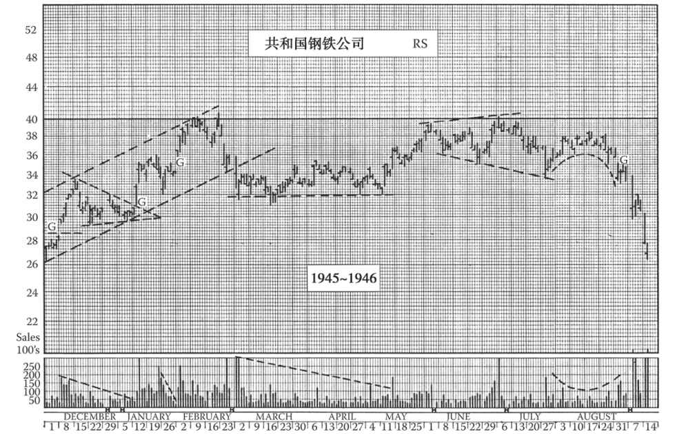
图9-13 因为真正的双顶反转形态要求两个高点之间有较长的时间间隔，所以此类形态一般很少出现在日线图上，但共和国钢铁公司1946年的走势是一个例外。请注意两个高点之间有5个月的时间间隔和20%的调整幅度。此图还包含了不少有意思的技术形态。股价在6～7月波幅扩大（见第10章），构筑第2个顶部，随后在8月走出圆形反弹，这些形态都强烈预示着该股将转熊
一旦抵挡不住，双顶形态就宣告成立。如果股价从第2个高点下跌后击穿谷底位置，这就是趋势反转的信号，此信号通常具有长线效力。中线趋势反转时很少出现双顶形态。所以，当你确信这是一个双顶反转形态，千万不要掉以轻心，即便股价已经跌去了20%，也可能只是熊市的开始。
至于形态突破后的跌幅，双顶没有像头肩形态和三角形态那样的测算公式，但股价会至少再跌去一个从峰值到谷底的距离。如果下跌时股价受到干扰，情况可能会不一样，不会一步到位，需要通过数波下跌来实现。形态突破之后，股价修复至谷底水平的反弹也不罕见。（请记住一般情况下，反转形态突破后的回踩或反抽最多一次。）
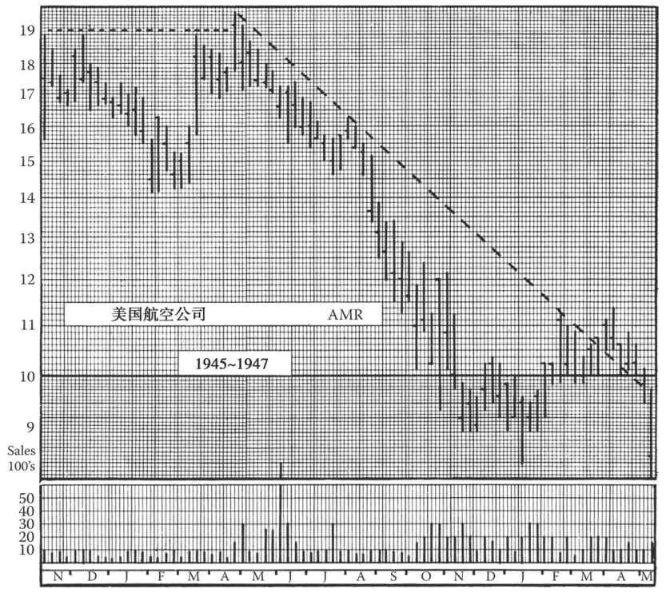
图9-14 此图中，美国航空公司股票起初在90美元左右，1946年4月每1股拆成5股，导致股价快速创出新高。此时结合上一年12月的高点，显然股价可能走出双顶形态；当股价于8月28日击穿谷底位置时，双顶得到确认。股票拆分引发的行情通常只会暂时扭曲供求关系，昙花一现
还有一点：我们说过双顶的高度并不一定完全一样，可以允许3%的差异。比如说，第1个高点为50美元，如果第2个高点为50½美元的话，也可以被视为双顶。有趣的是，第2个高点常常会略高于第1个高点。重点是：①买盘不足以让第2个高点大幅高于第1个高点，且②支撑位随后被突破。
9.7 双底
在识别双底形态时，可以应用双顶形态的所有规则，把方向颠倒一下即可。两种形态的区别仅在于它们的后续走势，请记住头肩顶和头肩底之间的特征差异。双底的第2个底部常常成交清淡，且趋于圆形；而双顶的第2个顶部则交投更活跃一些，且形状往往和第1个顶部一样较“尖”。而对于双底，从第2个底部开始的反弹往往伴随着成交放大，应该达到甚至超过两个底部中间的高点位置。长线趋势反转时出现双底的概率和双顶差不多。双底形态有时候也出现在长线升势的中线调整末期。
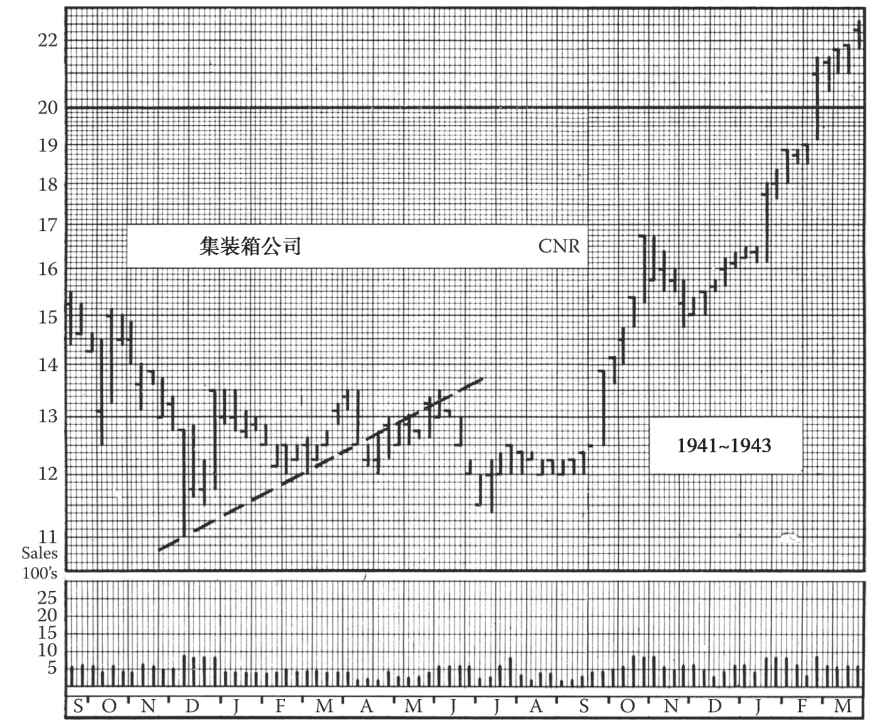
图9-15 这是集装箱公司在长线牛市初期形成的一个长线反转形态。请注意该股从一个上升三角形慢慢演变成了一个双底形态
如果你熟悉金融圈的行话，可能会听说过“二次探底”这个词。二次探底其实就是对前一个底部支撑位的再次测试和证明。但是，仅有在股价展现出能突破前期高点（两个底部中间的高点）的量能时，才可以确认探底成功。如果不能成功，则可能出现第三次探底，也就是我们下一段将要讨论的反转形态。
9.8 三顶和三底
如果双顶存在的话，那么按照逻辑，我们就可以推断三顶也存在，并和双顶有相似的发展过程。事实上，三顶形态的确存在，只是极为罕见。很多包含3个高点的形态都会出现于牛转熊的关键时刻，然而大多数都发展成了箱体形态。按照这个逻辑，头肩形，特别是较为平坦的那一类（即头部并没超出肩部太多），也可以看作三顶的一种。
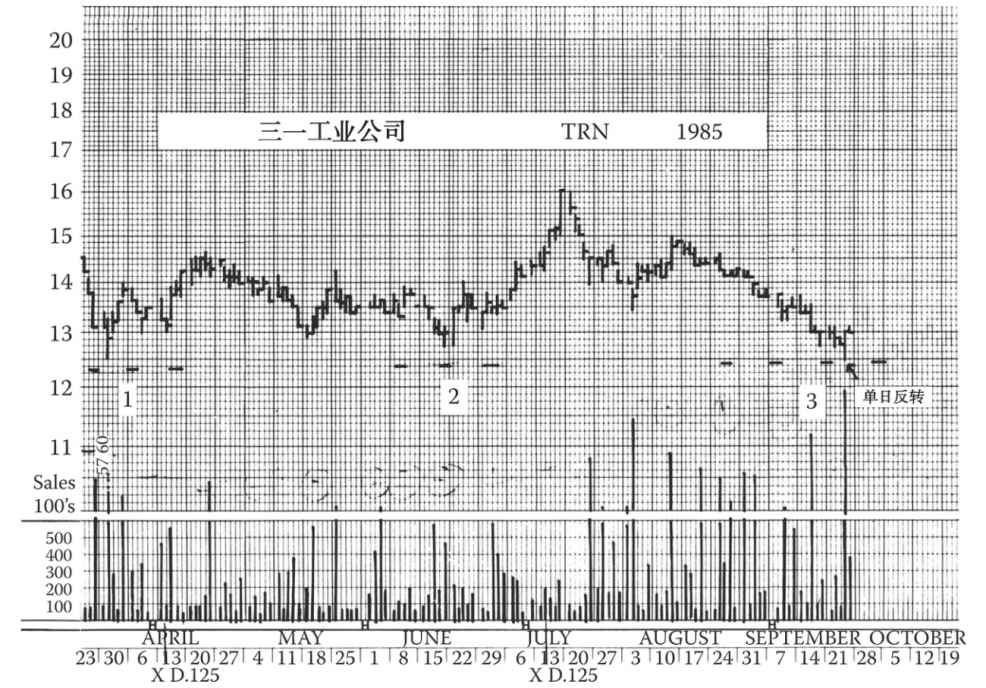
图9-16 虽然这张图里三一工业的走势形态不甚清晰，但我们发现该股1985年8～9月放量下跌，形成了第3个低点，这是一个极具欺骗性的技术形态。总的来说，这是一个三底形态，最后一天的反转开启了新的涨势
真正的三顶形态（而不是含有3个高点的其他形态）具有与双顶十分相似的特征。3个顶部间隔较大，且顶部之间的谷底较深、较圆。第2波股价上涨的成交量明显小于第1波；第3波的成交量则比第2波更小，常常在上涨过程中并无明显起色。三顶并不需要像双顶一样隔得那么远，两段间隔距离也不必相等。因此，第2个顶部可能相距第1个只有3周，而第3个顶部相距第2个可能有6周以上的时间。此外，两个谷底并不需要在同一水平线上，可能一个深一些，另一个浅一些。3个顶部也不需要达到同一高点，允许3%的价格偏差。尽管三顶允许上述偏差的存在，但一般来说，图表分析老手仅凭一个特征就能认出三顶。
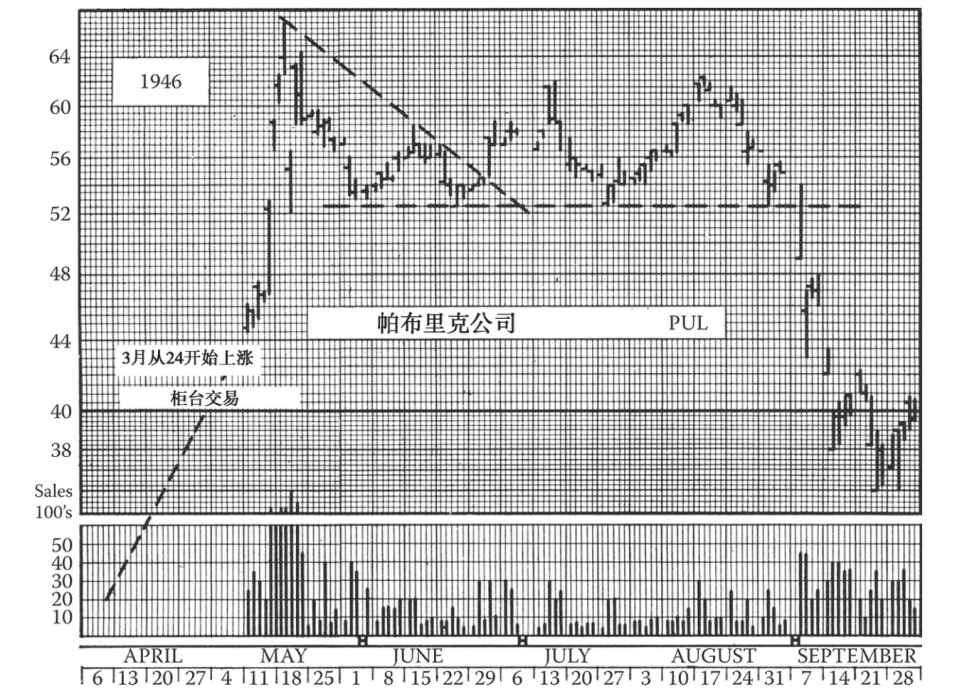
图9-17 帕布里克公司在主板上市仅仅几周就创新高，之后走出了一个下降三角形，但最后股价上扬，向上突破该形态，最终于8月完成了三顶形态（见图8-17及图9-15）
三顶的结论性依据是股价从第3个顶部下跌时跌破谷底（如果两个谷底一高一低，那么就要跌破较低的那一个）。在股价跌破谷底之前，三顶都不算确立，因为只要在谷底附近还有买盘，那么股价就可能回升。只有在少数情况下，成交量在第3个顶部区域极度萎缩，却在之后的下跌中迅速放大，显示出熊市的特征，我们才能提前确认三顶。
三顶倒转过来就是三底，其形态要求同双底。成交量在第3个低点时必须萎缩，从第3个低点上涨时必须放大；此外，第3次反弹时股价必须有效突破前两次反弹的高点。除非绝大部分股票都明确地进入了牛市，否则永远不要过早进场。三底形态一旦构筑完成，并得到股价向上突破的确认，就很少失败，股价极有可能大幅上涨。但在三底形态构筑完成之前，必须谨慎对待，严守关于形态突破的规则以确保投资安全。
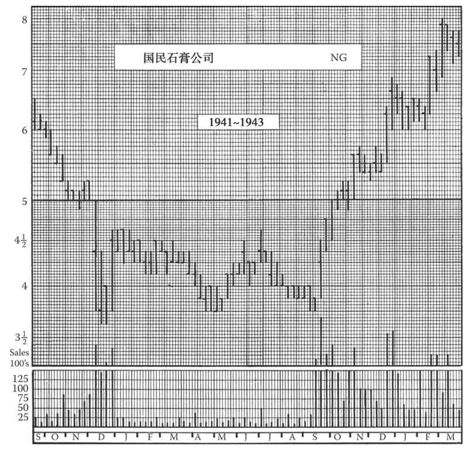
图9-18 这张图中，国民石膏公司股票在上下1美元的区间内，构筑了一个长达10个月的底部，在此期间大多数交易者都不会注意该股，因为它短线无利可图。在等差坐标图上，此形态很难辨认；但在对数坐标图上，低价位的股价波动能得到更好的呈现
此图中的形态符合三底的各项特征，即三个底部的间隔和底部之间反弹的高度和成交量。当然，该形态于1942年10月构筑完成时，并不一定预示着股价将涨到后来的33美元。同时，许多其他更高价位的股票也在构筑长线底部，故可判断国民石膏公司股票趋势向上，5美元处是买入机会
三顶形态有时看上去很像大写字母W，所以又称“W形”。出于同样的缘故，双顶有时被称为“M形”。
因为双顶、三顶、双底、三底等形态往往持续较长时间，所以与日线图相比，周线图能够更好地呈现它们。月线图能显示一些双底及三底形态，但因过于粗糙而不能很好地显示许多双顶及三顶形态。
前文在讨论三顶时曾提到凭经验得来的直觉，我们可依靠这种直觉，在结论性依据出现之前，就通过技术分析判断反转概率。这是一种不同寻常的能力，通常只会在长期的研究和实战中养成，而实战就意味着难免要付出昂贵的代价。但读者如果遵照本书的指导，认真地对图表进行研究、观察、验证、再验证，就可在不花费过多成本的情况下，获得这种能力。
有人说，图表的解读不是一门科学，而是一门艺术。其实应该说，它不是一门精密科学，因为图表的解读不存在绝对正确的规则。技术形态上的细微要领无法用规则或准则来表述。分析者必须对众多可能自相矛盾的因素进行研判。但是，将图表的解读称为一门艺术是不恰当的，因为这种说法意味着分析者必须具备过人的天赋，或至少天资聪颖。图表的解读确实要求具备一定的技能，但这些技能是常人都可以学会的。
[1] 第8 章中提到约为3:1。—译者注